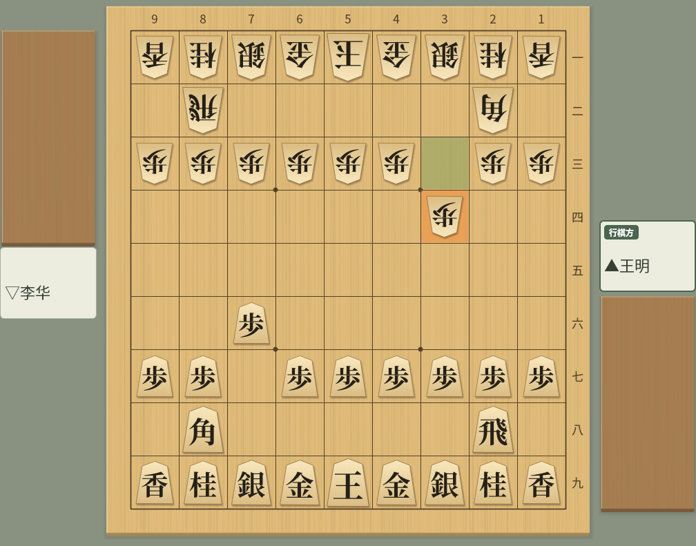

在 Claude、Cursor、VS Code、Gemini CLI 和 Codex CLI 中使用 ShogiBoardQ
ShogiBoardQ 附带 Model Context Protocol（MCP）服务器
MCP 是让 AI 客户端（Claude Desktop、Claude Code、Cursor、VS Code 中的 GitHub Copilot、Gemini CLI、Codex CLI 等）调用外部工具的通用规范。注册 ShogiBoardQ 的 MCP 服务器（shogiboardq-mcp）后，只需对 AI 客户端说“把这份棋谱转换为 CSA”“把这个局面分析 10 秒”“生成 5 道三手诘”，客户端就会调用 ShogiBoardQ 的功能来完成。
服务器同时支持 MCP 规范的最新版（2026-07-28）和以前的版本（2024-11-05〜2025-11-25），新旧客户端都可以连接。
以下工具在内部运行 shogiboardq-cli，无需打开窗口。
| 工具 | 功能 |
|---|---|
| convert_kifu | 把棋谱文件或文本转换为 KIF、KI2、CSA、JKF、USI、USEN 或 SFEN 列表 |
| validate_sfen | SFEN 是否合法、行棋方、持驹、是否将军、合法着法数 |
| list_engines | 在 ShogiBoardQ 中注册的 USI 引擎 |
| analyze_position / analysis_status / analysis_result | 用已注册的引擎分析局面（支持 MultiPV，任务方式） |
| analyze_kifu / kifu_analysis_status / kifu_analysis_result | 分析整份棋谱的主线。支持指定范围、进度、分页获取结果和取消 |
| search_mate / mate_status | 用支持 go mate 的引擎搜索诘棋（任务方式） |
| generate_tsume / tsume_generation_status / stop_tsume_generation | 自动生成诘棋局面（任务方式） |
| verify_tsume | 余诘检查（唯一解 / 有余诘 / 不诘 / 手数不符 / 无法判定） |
| render_board_image | 从 SFEN 生成棋盘的 PNG 图片 |

render_board_image 的输出示例：与 GUI 相同的棋子图片和配色，并可突出显示最后一手。“行棋方”等标签和段的坐标会按照 ShogiBoardQ 的界面语言和记法设置显示
以 --automation 启动 ShogiBoardQ 后，可以用以下工具读取和修改窗口中的局面和棋谱。
| 工具 | 功能 |
|---|---|
| get_app_state | 状态（待机、对局中、分析中等）、当前手数、棋谱文件名、是否有未保存的更改、打开的对话框 |
| get_position / set_position | 获取当前局面的 SFEN 和着法，设置局面 |
| load_kifu / save_kifu / get_kifu / goto_ply | 读取、保存和获取棋谱（可指定格式和手数范围），移动到指定手数 |
| list_actions / trigger_action | 列出并执行菜单操作（允许列表方式） |
| capture_screenshot | 把主窗口或对话框的截图保存为 PNG |
| list_dialogs / close_dialog / get_widget_text | 列出、关闭对话框，读取标签、输入框、表格、棋盘的内容和坐标 |
| list_menu_actions / select_menu_action | 获取和操作定式、最近文件和已保存布局等动态菜单 |
| menu_favorites | 获取、添加、移除、排序并保存菜单的收藏 |
| click_branch_node | 移动到变化树的节点 |
| click_board_square / click_dialog_button | 点击棋盘和驹台，选择题目、回答升变等对话框。坐标会跟随棋盘的翻转和大小 |
| show_dock / click_widget / set_widget_value / click_table_cell | 显示面板，操作按钮、设置、棋谱和读筋表格，并在可编辑的输入框中输入文字 |
| edit_table_cell | 在对局信息等可编辑的表格单元格中输入文字。也可以保持编辑状态而不确认 |
| get_clipboard | 获取剪贴板的文本，以及是否有图片和图片尺寸 |
| list_docks / configure_dock | 确认面板状态，分离、停靠到上下左右、合并为标签页、显示或隐藏，以及拖动标题栏 |
还以资源形式提供当前局面（shogiboardq://position/current，SFEN）、当前棋谱（shogiboardq://kifu/current，KIF 文本）和已注册的引擎（shogiboardq://engines）。
需要构建好的 ShogiBoardQ 和 Python 的 mcp 包
服务器使用 build/ShogiBoardQ（GUI）和 build/shogiboardq-cli（无需 GUI 的命令）。Windows 版的发布 ZIP 同时包含 ShogiBoardQ.exe 和 shogiboardq-cli.exe，无需构建即可使用：请将下面的 SHOGIBOARDQ_EXECUTABLE 设为解压 ZIP 后文件夹中的 ShogiBoardQ.exe。Linux 和 macOS 的发布包不包含 shogiboardq-cli，请参阅 Linux、macOS 或 Windows 的构建指南（macOS 为英文）从源代码构建。
git clone --recurse-submodules https://github.com/hnakada123/ShogiBoardQ.git
cd ShogiBoardQ
cmake -B build -S . -G Ninja
cmake --build build
./build/shogiboardq-cli version # 显示 {"ok":true,"version":"..."} 即可需要 Python 3.10 或更高版本，以及官方的 mcp 包 2.x（2.0 或更高、低于 3.0）。服务器位于仓库的 mcp/ 目录。
如果操作系统的软件包（如 Arch Linux 的 python-mcp）是 1.x，请用 pip 安装 2.x。用 1.x 启动时，服务器会显示所需的版本并退出。
# 只安装 mcp 包（服务器通过 PYTHONPATH 引用）
pip install "mcp>=2,<3"
# 或者连同服务器一起安装
pip install -e mcp分析、诘棋搜索、诘棋生成和余诘检查，都按名称指定在 ShogiBoardQ 的“设置”→“引擎设置…”中注册的 USI 引擎，不接受任意的可执行文件路径。诘棋搜索、生成和余诘检查需要注册支持 go mate 的引擎（如 KomoringHeights）。
在客户端的配置中把以下环境变量传给服务器。至少需要指定 SHOGIBOARDQ_EXECUTABLE。
| 变量 | 含义 |
|---|---|
SHOGIBOARDQ_EXECUTABLE | ShogiBoardQ 的路径。应用操作工具在没有运行中的应用时会加上 --automation 启动它。也会自动找到同一目录中的 shogiboardq-cli |
SHOGIBOARDQ_CLI | shogiboardq-cli 的路径（放在其他位置时） |
SHOGIBOARDQ_ALLOWED_DIRS | 允许读写的目录（Linux/macOS 用 : 分隔，Windows 用 ; 分隔）。默认是主目录 |
SHOGIBOARDQ_OUTPUT_DIR | 截图等的默认输出位置。默认是临时目录下的 shogiboardq-mcp |
SHOGIBOARDQ_AUTOMATION_SOCKET | 自动化套接字的路径（与应用的 --automation-socket 相同） |
SHOGIBOARDQ_QUIT_APP_ON_EXIT | 设为 1 时，服务器退出时会关闭由服务器启动的应用（默认保留） |
PYTHONPATH | 未执行 pip install -e mcp 时，指定仓库的 mcp 目录 |
所有客户端的做法都一样：以 stdio 启动 python3 -m shogiboardq_mcp，并传入环境变量
以下为 Linux 的示例，请把 /path/to/ShogiBoardQ 替换为仓库的位置。在 Windows 上，把 python3 改为 python，路径写成 C:\\Users\\...\\ShogiBoardQ\\build\\ShogiBoardQ.exe 这样的形式。修改配置后，请重新启动客户端（或重新加载 MCP 服务器）。
在项目中运行以下命令（加上 --scope user 可在所有项目中启用）。-- 之后是服务器的启动命令。
claude mcp add shogiboardq \
--env SHOGIBOARDQ_EXECUTABLE=/path/to/ShogiBoardQ/build/ShogiBoardQ \
--env PYTHONPATH=/path/to/ShogiBoardQ/mcp \
-- python3 -m shogiboardq_mcp
claude mcp list # 确认连接状态把服务器添加到 claude_desktop_config.json（通过 Settings → Developer → Edit Config 打开。macOS：~/Library/Application Support/Claude/，Windows：%APPDATA%\Claude\）。
{
"mcpServers": {
"shogiboardq": {
"command": "python3",
"args": ["-m", "shogiboardq_mcp"],
"env": {
"SHOGIBOARDQ_EXECUTABLE": "/path/to/ShogiBoardQ/build/ShogiBoardQ",
"PYTHONPATH": "/path/to/ShogiBoardQ/mcp"
}
}
}
}写入项目的 .cursor/mcp.json（所有项目通用时写入 ~/.cursor/mcp.json）。
{
"mcpServers": {
"shogiboardq": {
"command": "python3",
"args": ["-m", "shogiboardq_mcp"],
"env": {
"SHOGIBOARDQ_EXECUTABLE": "/path/to/ShogiBoardQ/build/ShogiBoardQ",
"PYTHONPATH": "/path/to/ShogiBoardQ/mcp"
}
}
}
}写入工作区的 .vscode/mcp.json。VS Code 的顶层键是 servers。要在整个用户范围内使用，请从命令面板执行“MCP: Open User Configuration”，并以相同格式添加。
{
"servers": {
"shogiboardq": {
"type": "stdio",
"command": "python3",
"args": ["-m", "shogiboardq_mcp"],
"env": {
"SHOGIBOARDQ_EXECUTABLE": "/path/to/ShogiBoardQ/build/ShogiBoardQ",
"PYTHONPATH": "/path/to/ShogiBoardQ/mcp"
}
}
}
}用以下命令注册，或写入 ~/.gemini/settings.json（项目则为 .gemini/settings.json）的 mcpServers。
gemini mcp add -s user \
-e SHOGIBOARDQ_EXECUTABLE=/path/to/ShogiBoardQ/build/ShogiBoardQ \
-e PYTHONPATH=/path/to/ShogiBoardQ/mcp \
shogiboardq python3 -m shogiboardq_mcp{
"mcpServers": {
"shogiboardq": {
"command": "python3",
"args": ["-m", "shogiboardq_mcp"],
"env": {
"SHOGIBOARDQ_EXECUTABLE": "/path/to/ShogiBoardQ/build/ShogiBoardQ",
"PYTHONPATH": "/path/to/ShogiBoardQ/mcp"
}
}
}
}同一台主机上的 Codex 客户端共用 ~/.codex/config.toml。请用以下命令注册，或写入下面的配置。python3 需指定安装了 mcp 包的 Python；使用虚拟环境时，请改为该 Python 的绝对路径。
codex mcp add shogiboardq \
--env SHOGIBOARDQ_EXECUTABLE=/path/to/ShogiBoardQ/build/ShogiBoardQ \
--env PYTHONPATH=/path/to/ShogiBoardQ/mcp \
-- python3 -m shogiboardq_mcp[mcp_servers.shogiboardq]
command = "python3"
args = ["-m", "shogiboardq_mcp"]
startup_timeout_sec = 30
env_vars = ["DISPLAY", "WAYLAND_DISPLAY", "XDG_RUNTIME_DIR", "XAUTHORITY", "DBUS_SESSION_BUS_ADDRESS", "XDG_CONFIG_HOME"]
[mcp_servers.shogiboardq.env]
SHOGIBOARDQ_EXECUTABLE = "/path/to/ShogiBoardQ/build/ShogiBoardQ"
PYTHONPATH = "/path/to/ShogiBoardQ/mcp"在 Linux 上自动启动 GUI 时，即使用命令注册，也请在 [mcp_servers.shogiboardq] 中加入上面的 env_vars。它用于传递显示、会话的环境变量和配置目录。请编辑已有的表，不要重复创建。
用 codex mcp get shogiboardq 确认注册内容，然后重新启动 Codex 并开始新的对话。在 CLI 中可以用 /mcp 确认连接。请求“用 ShogiBoardQ 的 validate_sfen 验证 startpos”，返回合法着法数 30 即表示工具可以运行。codex mcp list 只显示注册内容。
在没有显示器的环境中试用应用操作工具时，请在 [mcp_servers.shogiboardq.env] 中加入 QT_QPA_PLATFORM = "offscreen"。此时窗口不会显示在屏幕上。配置的详情请参阅 OpenAI 官方 MCP 文档。
用自然语言提出请求，客户端会选择合适的工具来调用
| 请求 | 调用的工具 |
|---|---|
| “把 ~/kifu/game.kif 转换为 CSA 格式并保存为 ~/kifu/game.csa” | convert_kifu |
| “这个 SFEN 是合法局面吗？是否被将军？” | validate_sfen |
| “用 YaneuraOu 把初始局面走 7g7f 3c3d 后的局面分析 10 秒，候选 3 手” | list_engines → analyze_position → analysis_result |
| “用 KomoringHeights 查一下这个局面有没有诘” | search_mate → mate_status |
| “生成 5 道三手诘，攻方棋子最多 3 枚” | generate_tsume → tsume_generation_status |
| “确认这道五手诘没有余诘” | verify_tsume |
| “把这个局面做成图片，保存为 ~/Pictures/board.png” | render_board_image |
分析、诘棋搜索和诘棋生成会由开始工具立即返回任务 ID，客户端再用状态工具（analysis_status 等）获取进度和结果。每次调用都很短，因此即使客户端在约 60 秒后中断工具调用，也能处理需要几分钟的分析和生成。生成可以用 stop_tsume_generation 提前结束，任务列表用 list_jobs，取消用 cancel_job。
局面用 SFEN（startpos 为初始局面），着法用 USI 格式（7g7f，打入持驹为 P*5e）传递。结果同时包含便于阅读的摘要和便于程序处理的结构化数据（structuredContent）。棋谱文本和读筋默认只返回开头的一部分，可用 max_chars 和 max_pv_moves 调整。
可以从 AI 客户端操作以 --automation 启动的 ShogiBoardQ
自动化 API 默认关闭。加上 --automation 启动后，ShogiBoardQ 会在只有本用户可以访问的本地套接字上接收请求，并在标准输出中显示 automation: listening on ...。设置了 SHOGIBOARDQ_EXECUTABLE 时，服务器会在第一次调用应用操作工具时自动启动应用（已启动则直接连接）。
./build/ShogiBoardQ --automation
# 指定套接字位置时
./build/ShogiBoardQ --automation --automation-socket /tmp/shogiboardq.sock| 请求 | 调用的工具 |
|---|---|
| “告诉我现在显示的局面” | get_position |
| “打开 ~/kifu/game.kif 并移动到第 30 手” | load_kifu → goto_ply |
| “把显示中的棋谱以 KI2 格式保存为 ~/kifu/out.ki2” | save_kifu |
| “打开棋谱分析对话框，读取内容并截图” | trigger_action → list_dialogs → get_widget_text → capture_screenshot |
| “翻转棋盘” | trigger_action (actionFlipBoard) |
在有未保存更改的状态下读取棋谱或设置局面的请求，除非明确指定 discard_unsaved，否则会被拒绝。菜单操作采用允许列表，无法执行退出和覆盖保存。可以切换语言，重新启动应用后生效。可执行的操作可用 list_actions 确认。
没有名称的控件，可以把 get_widget_text 或 list_dialogs 返回的 selector 指定给 widget、target 或 dialog 来操作。重新打开对话框或重新启动应用后请重新获取。set_widget_value 也支持滑块、列表、带勾选的组和颜色。菜单可以用 list_menu_actions 查询层级索引，再指定给 select_menu_action 的 path。
仅限本机、默认关闭、需要明确许可
--automation 时才有效SHOGIBOARDQ_ALLOWED_DIRS（默认是主目录）以外的路径会被拒绝。没有明确指定 overwrite 时不会覆盖已有文件shogiboardq-cli，需要从源代码构建设计的详情（JSON-RPC 方法列表、任务的状态转换、测试）请参阅开发者文档 docs/dev/mcp-server.md（日文）和 mcp/README.md（日文）。